Escolha uma região no menu abaixo para saber mais sobre seus
elementos, Arcontes e cultura!
Nod-Krai
Conhecendo Nod-Krai
Nod-Krai, também conhecida como as terras fronteiriças e antigamente chamada de
Nephilheim, é uma região autônoma localizada
na borda de Teyvat, ao sul de Snezhnaya. Pessoas de todos os cantos do continente se reúnem
na região, o que lhe rendeu a reputação de ser um verdadeiro "Elísio".
A região possui uma profunda ligação com as Três Luas que antigamente pairavam sobre
Teyvat, e é o lar dos Frostmoon Scions, o povo indígena de Nod-Krai. Alguns habitantes locais
são capazes de utilizar o Kuuvahki, um poder especial originado das Três Luas que antecede
os sete elementos conhecidos de Teyvat.
Nod-Krai é dividida em diferentes ilhas e áreas, cada uma controlada por facções distintas —
dos Fatui aos Frostmoon Scions — refletindo a natureza fronteiriça e multicultural da região.
Principais áreas de Nod-Krai
Nod-Krai é formada por diferentes áreas, cada uma com suas próprias paisagens,
características e locais importantes.
Ashveil Peak é uma área localizada no extremo norte de Pohjola, em Nod-Krai. A região foi
tomada pela Corrupção Abissal, que se espalhou até o céu, e por eras o povo Kuuvahki e o
poder do Abismo permaneceram em conflito constante pelo controle da área.
Subáreas: Cliffwatch Camp, Kipumaki Cliff, Special Territory Research Institute.
Cliffwatch Camp
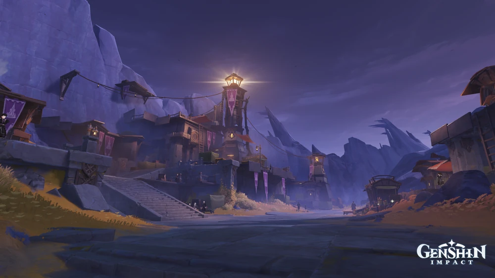
Imagem: GenshinImpactWiki
O Cliffwatch Camp é um acampamento situado próximo à Estátua dos Sete de Ashveil Peak,
servindo como ponto de apoio para exploradores que se aventuram pela região corrompida.
Kipumaki Cliff
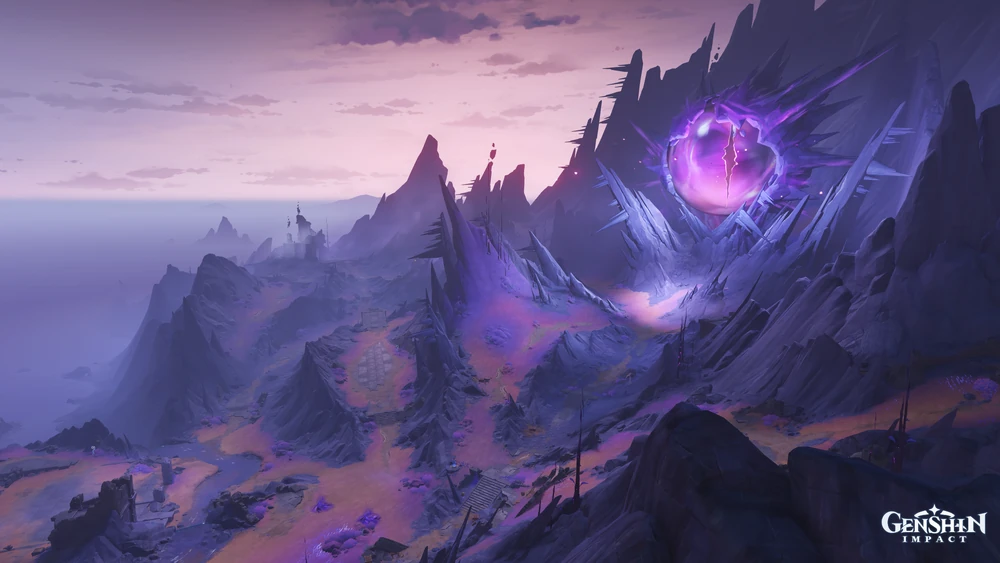
Imagem: GenshinImpactWiki
Kipumaki Cliff é uma formação rochosa elevada de Ashveil Peak, marcada pela paisagem
hostil resultante da longa exposição à energia abissal da região.
Special Territory Research Institute
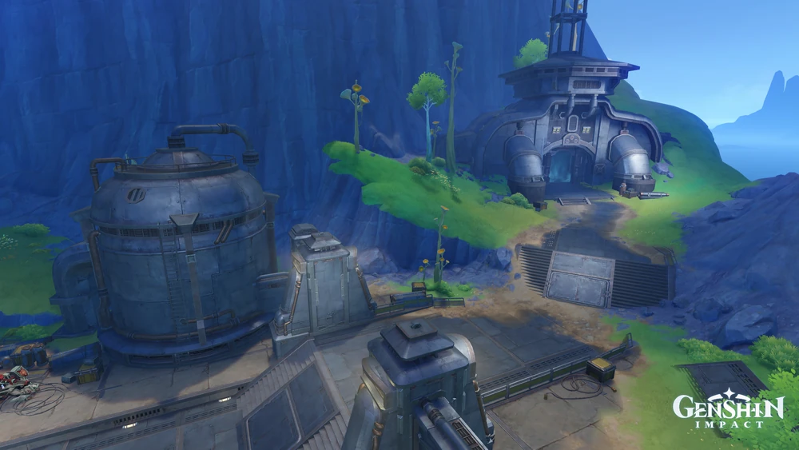
Imagem: GenshinImpactWiki
O Special Territory Research Institute é uma instalação de pesquisa dedicada ao estudo
dos fenômenos abissais que assolam Ashveil Peak, reunindo dados sobre a corrupção que
tomou conta da região.
2. Dunanna Pit
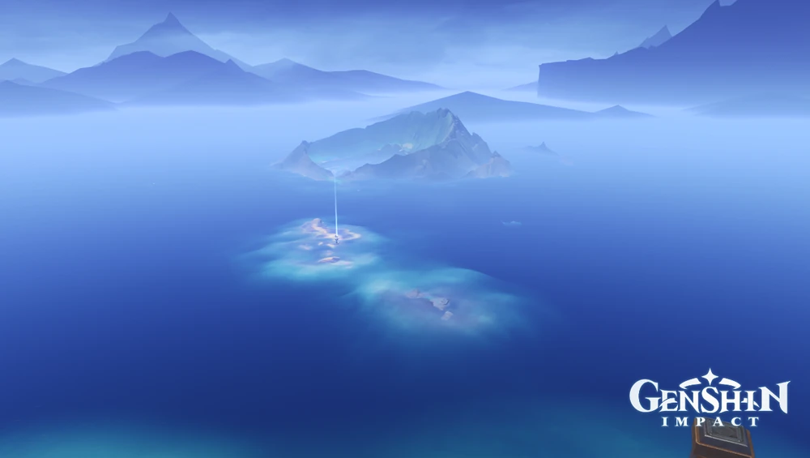
Imagem: GenshinImpactWiki
Dunanna Pit é uma área de Nod-Krai marcada por uma extensa depressão no terreno, cercada
por névoas e bancos de areia que se estendem pelo litoral próximo. O local funciona como
um posto avançado para quem explora as regiões mais remotas de Nod-Krai.
Subáreas: Dunanna Forward Station, Misty Shoal.
Dunanna Forward Station
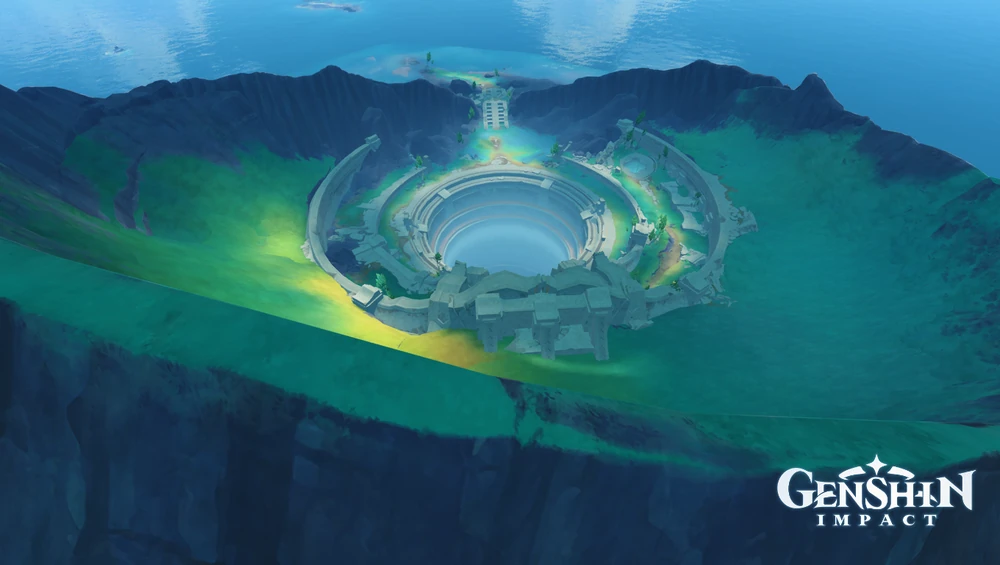
Imagem: GenshinImpactWiki
A Dunanna Forward Station é um posto avançado estabelecido na área, usado como base de
operações para expedições dentro de Dunanna Pit.
Misty Shoal
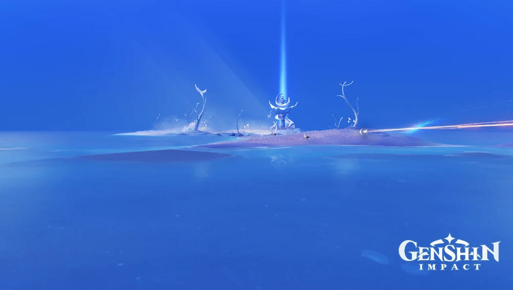
Imagem: GenshinImpactWiki
Misty Shoal é um banco de areia frequentemente encoberto por névoa, localizado na costa
de Dunanna Pit, dificultando a visibilidade de quem atravessa a região.
3. Hiisi Island
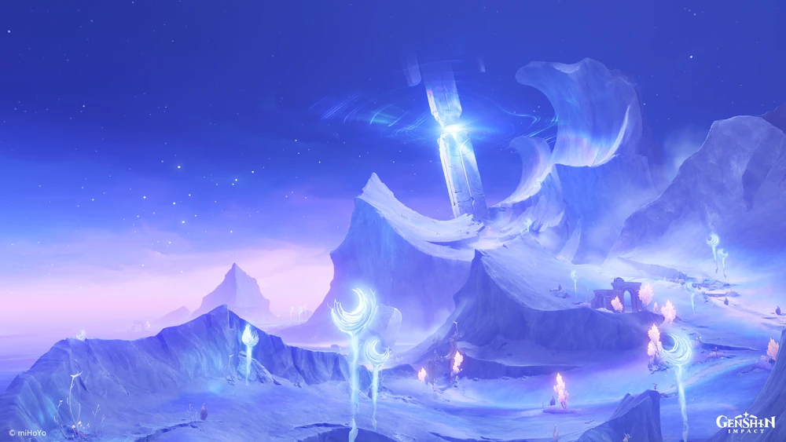
Imagem: GenshinImpactWiki
Hiisi Island é o lar dos Frostmoon Scions, um povo que há gerações venera a deusa da
Lua Nova e evita conflitos com forasteiros a todo custo. A ilha também guarda relíquias
que lembram a tecnologia da Fonte Secreta, e diz-se que Columbina estaria localizada
em algum ponto próximo.
O Frostmoon Enclave é o principal reduto dos Frostmoon Scions em Hiisi Island, reunindo
as principais missões mundiais e rituais ligados à devoção pela Lua Nova.
Light-Bathed Platform
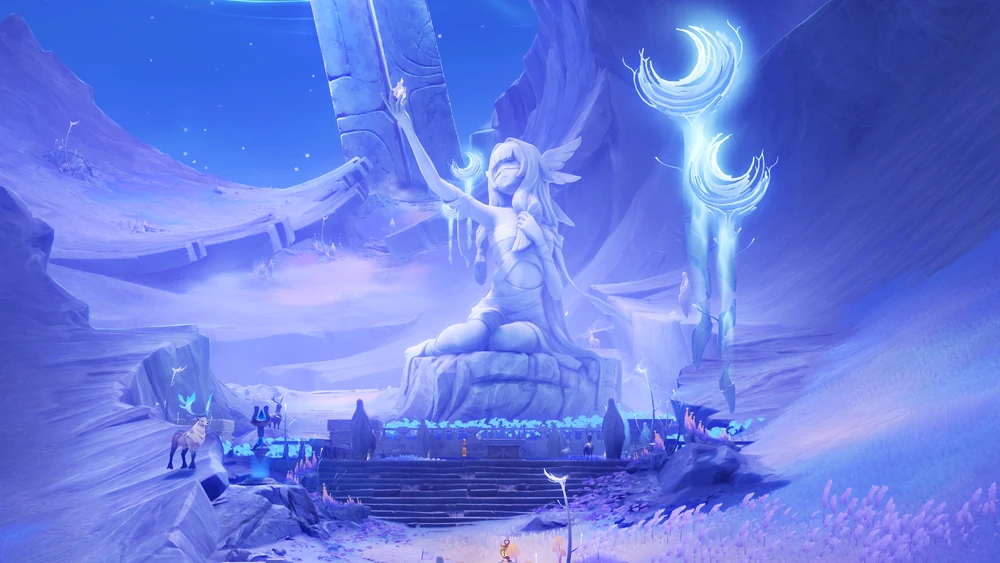
Imagem: GenshinImpactWiki
A Light-Bathed Platform é a principal área explorável de Hiisi Island, banhada por uma
luz constante associada aos rituais dos Frostmoon Scions.
Silvermoon Hall
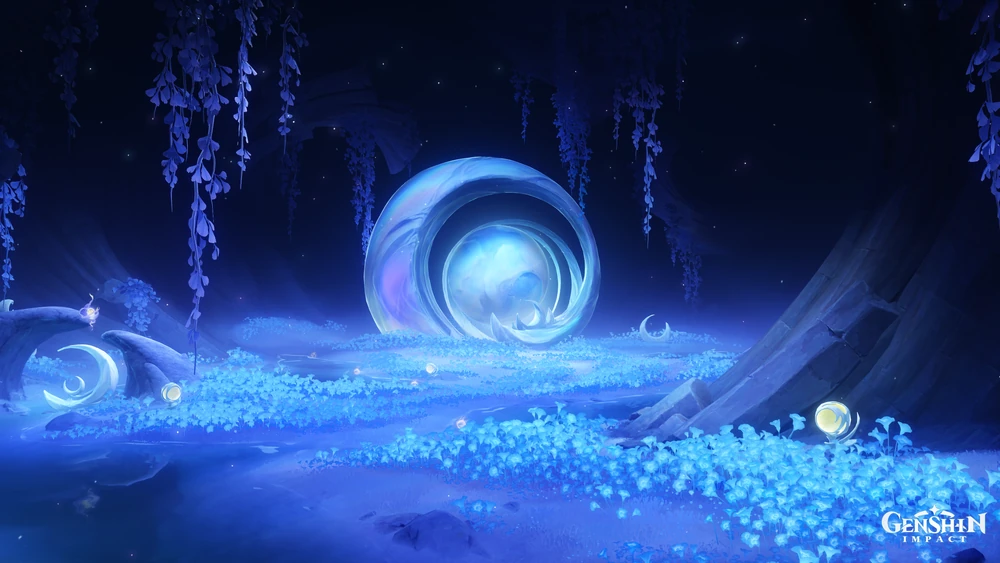
Imagem: GenshinImpactWiki
Silvermoon Hall é um salão sagrado de Hiisi Island, ligado às cerimônias mais importantes
realizadas pelos Frostmoon Scions em homenagem à sua deusa.
4. Lempo Isle
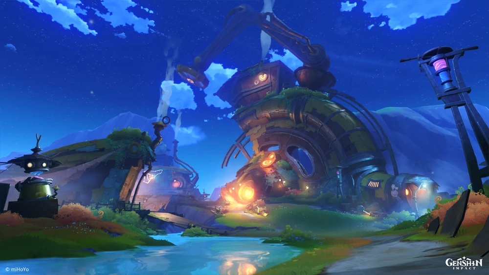
Imagem: GenshinImpactWiki
Lempo Isle é a área central de Nod-Krai e o primeiro local que os viajantes visitam ao
chegar à região. É o lar de Nasha Town, o principal porto comercial de Nod-Krai, além da
Clink-Clank Krumkake Craftshop, oficina de invenções administrada por Aino.
O porto de Nasha Town foi abandonado revitalizado nos últimos anos,
tornando-se o principal centro de exploradores e viajantes que chegam a Nod-Krai.
Subáreas: Barrowmoss Barrens, Blue Amber Lake, Clink-Clank Krumkake
Craftshop, Eye of Kratti, Nasha Town, Nothing Passage, Starsand Shoal.
Barrowmoss Barrens
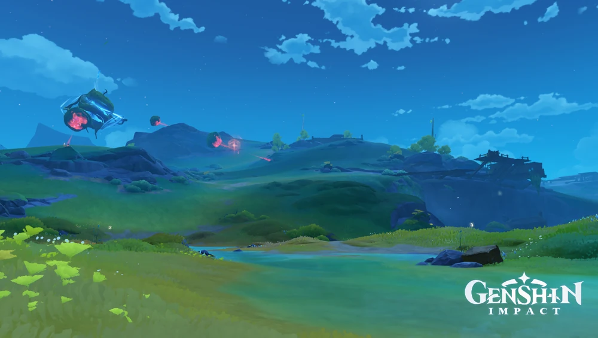
Imagem: GenshinImpactWiki
Barrowmoss Barrens é uma área pantanosa e desolada de Lempo Isle, conhecida por seu
terreno traiçoeiro e vegetação escassa.
Blue Amber Lake
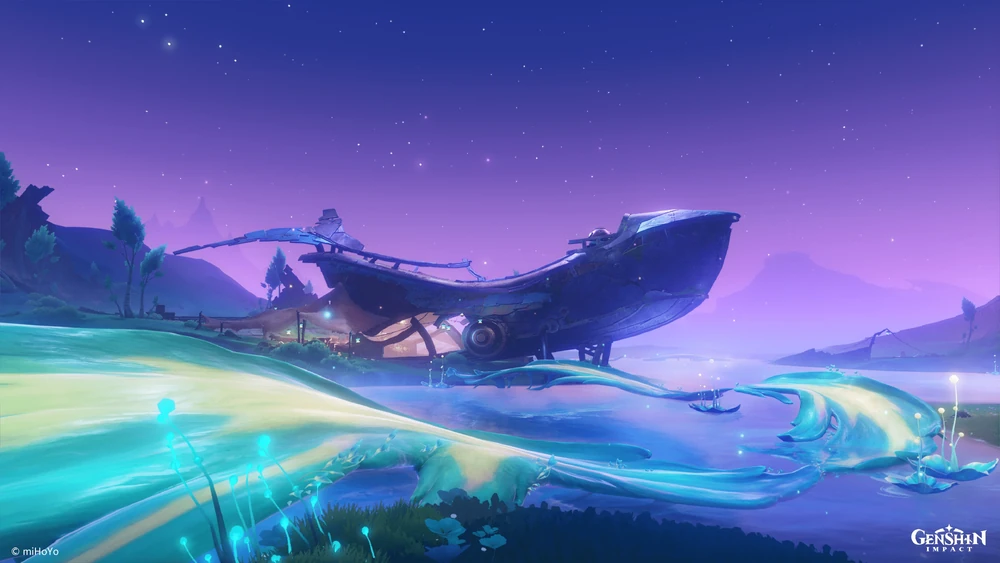
Imagem: GenshinImpactWiki
Blue Amber Lake é um belo lago adornado por uma flor gigante em seu centro, que esconde
segredos subterrâneos abaixo de suas águas calmas.
Clink-Clank Krumkake Craftshop
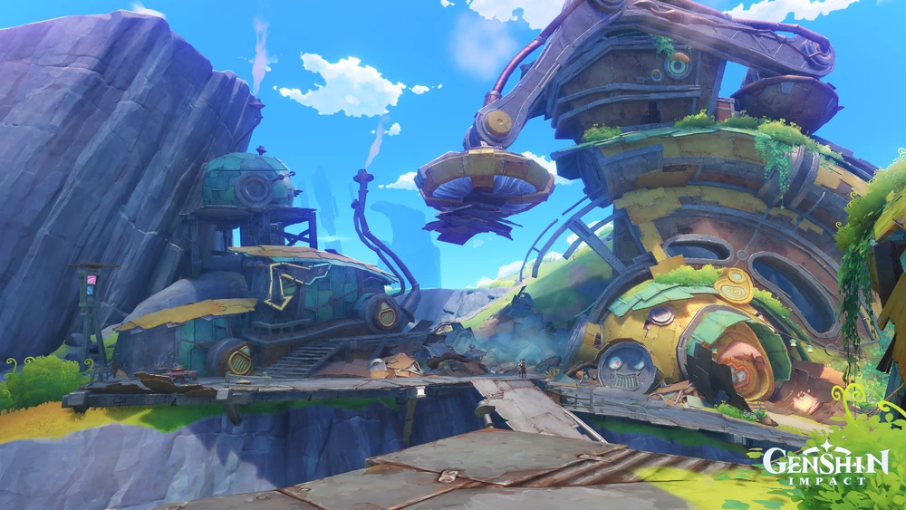
Imagem: GenshinImpactWiki
A Clink-Clank Krumkake Craftshop é a oficina onde Aino desenvolve suas invenções, repleta
de engenhocas e mecanismos espalhados pelo local.
Eye of Kratti
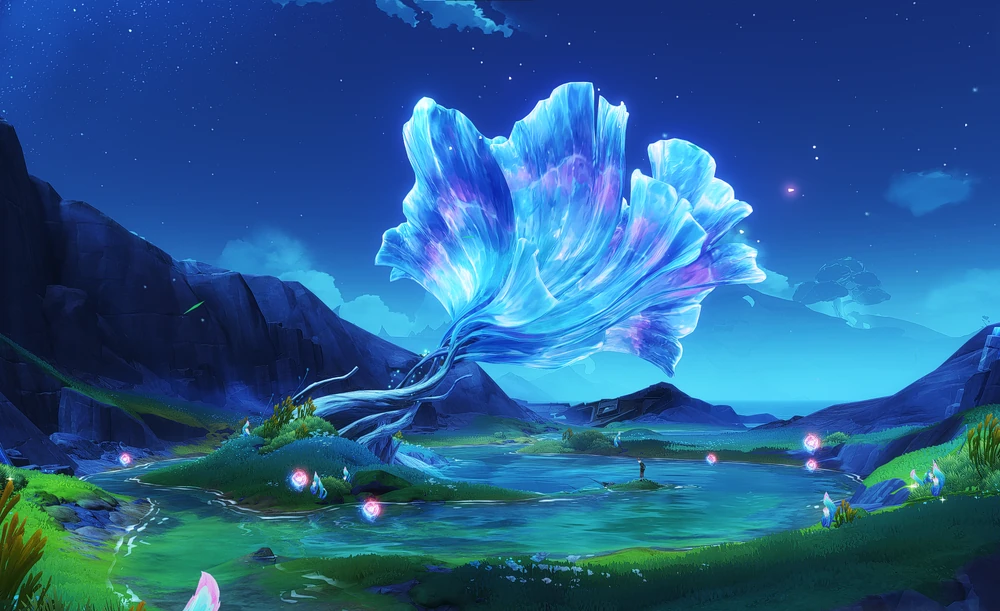
Imagem: GenshinImpactWiki
Eye of Kratti é um ponto de interesse de Lempo Isle, guardando mistérios ligados à
história antiga da ilha e suas conexões com o poder do Kuuvahki.
Nasha Town
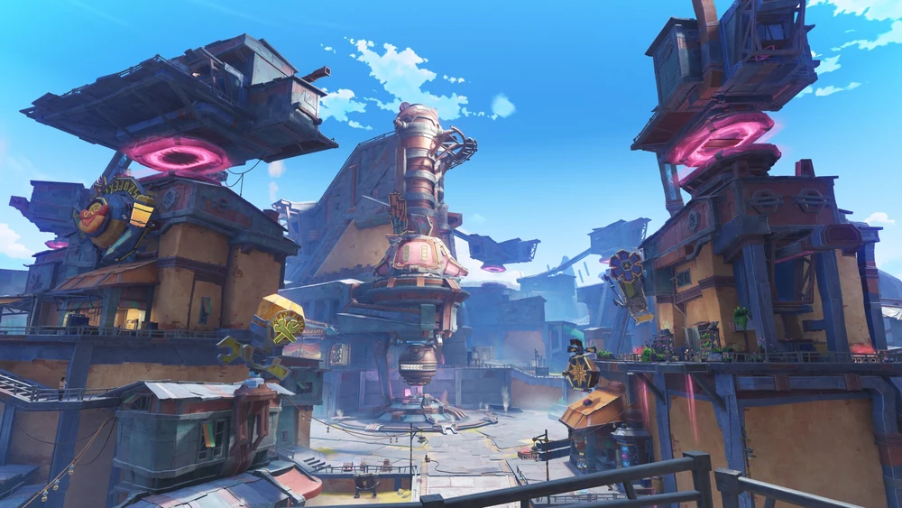
Imagem: GenshinImpactWiki
Nasha Town é o porto comercial mais próspero de Nod-Krai e o principal centro de apoio
para exploradores e visitantes. Segundo Liben, a região opera segundo suas próprias
regras, com a Guilda Voynich atuando como autoridade local.
Nothing Passage
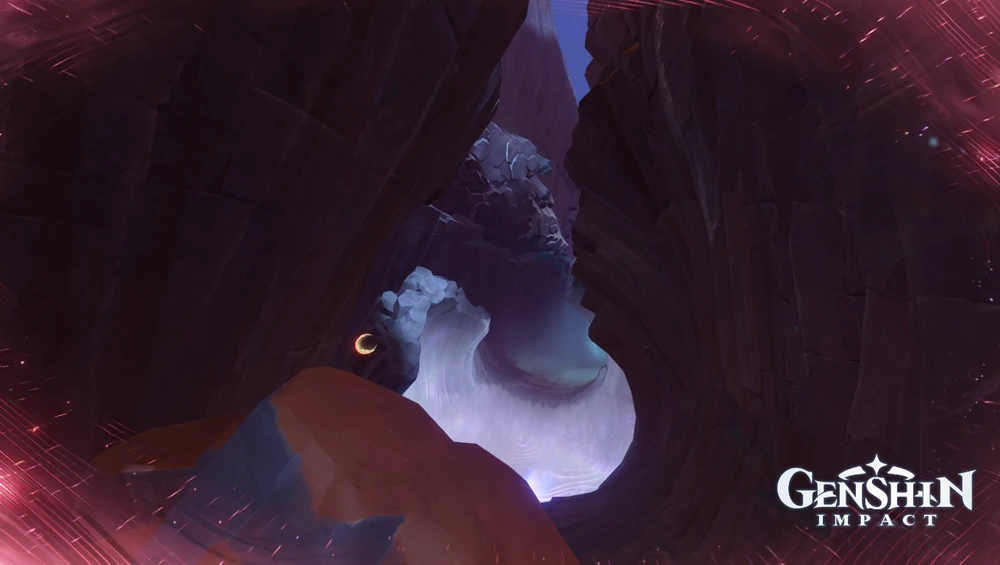
Imagem: GenshinImpactWiki
Nothing Passage é um corredor estreito entre penhascos, energizado por cristais mágicos
alimentados pelo Kuuvahki, reunindo diversas missões e quebra-cabeças.
Starsand Shoal
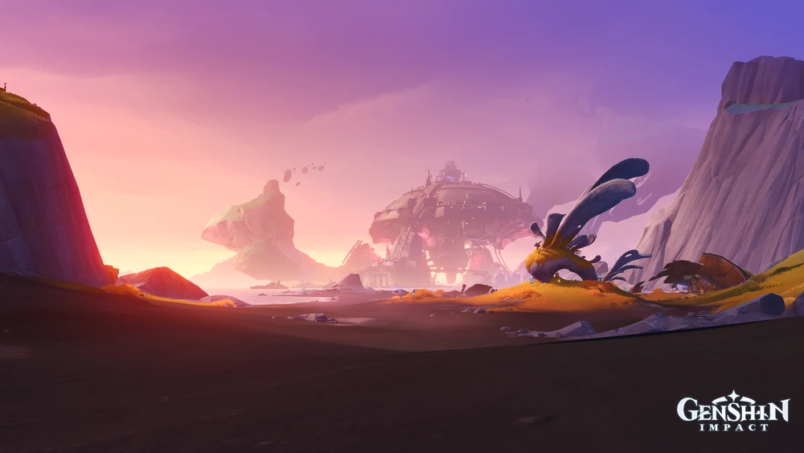
Imagem: GenshinImpactWiki
Starsand Shoal é um banco de areia de Lempo Isle, conhecido por sua paisagem tranquila e
pela areia que brilha sob a luz das luas de Nod-Krai.
5. Paha Isle
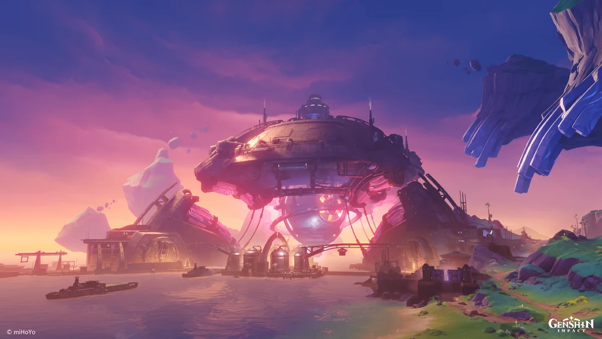
Imagem: GenshinImpactWiki
Paha Isle é a principal área de operação dos Fatui em Nod-Krai, que transformaram o local
em uma verdadeira fortaleza. É aqui que se encontra o Kuuvahki Experimental Design Bureau,
instalação dedicada a misteriosos experimentos ligados ao Kuuvahki.
Subáreas: Final Night Cemetery, Kuuvahki Experimental Design Bureau.
Final Night Cemetery
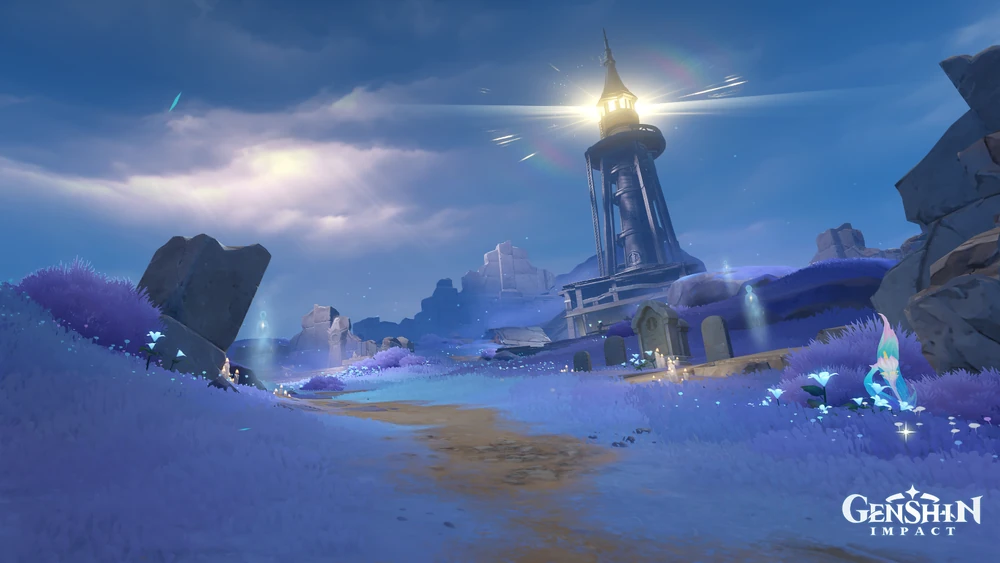
Imagem: GenshinImpactWiki
O Final Night Cemetery é um cemitério localizado em Paha Isle, abrigando um dos Santuários
das Profundezas das terras fronteiriças e servindo como ponto-chave para exploração da área.
Kuuvahki Experimental Design Bureau
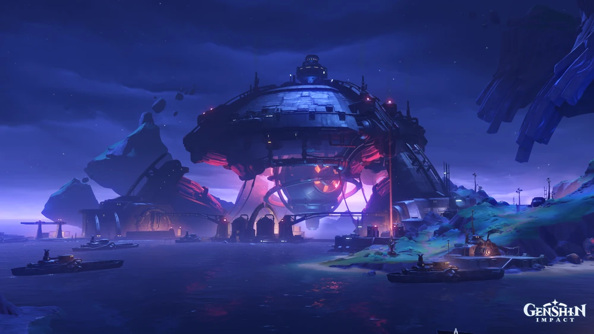
Imagem: GenshinImpactWiki
O Kuuvahki Experimental Design Bureau é a instalação central dos Fatui em Paha Isle, onde
experimentos mecânicos misteriosos são conduzidos, possivelmente ligados ao Édito Palestar
e à busca por Columbina.
6. Voidsea Outlook
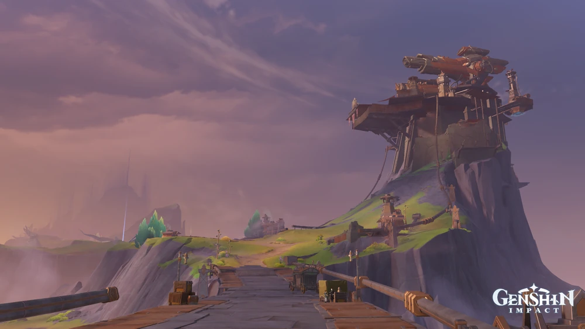
Imagem: GenshinImpactWiki
Voidsea Outlook está localizada ao norte de Paha Isle, sendo formada por duas sub-áreas
principais. O local guarda segredos antigos ligados a uma entidade selada há muito tempo
sob suas terras pantanosas.
Subáreas: Dreadshade Mire, Piramida.
Dreadshade Mire
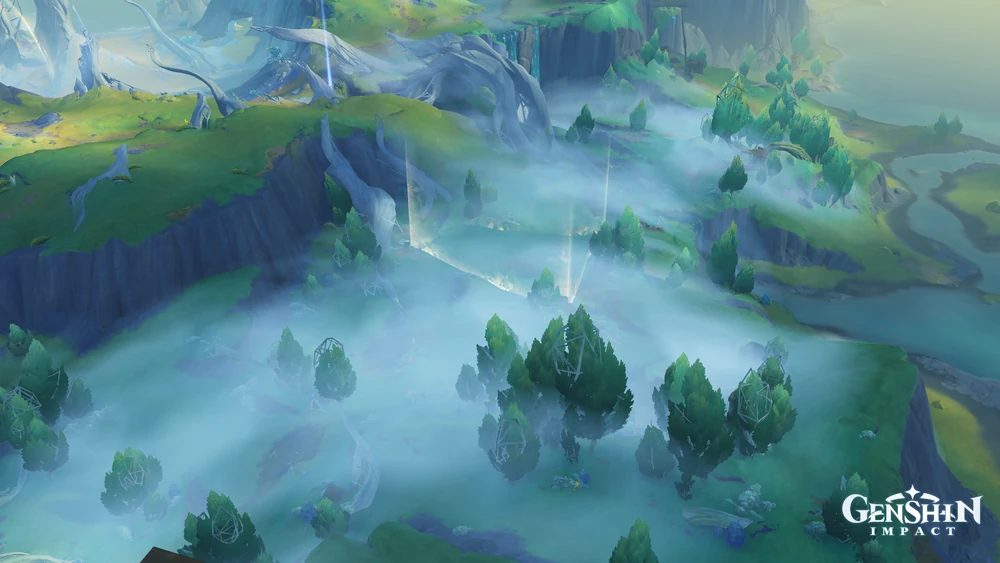
Imagem: GenshinImpactWiki
Dreadshade Mire é um pântano sombrio que aprisiona a chamada Serpente de Todos os Males,
uma entidade antiga selada sob as terras de Voidsea Outlook.
Piramida
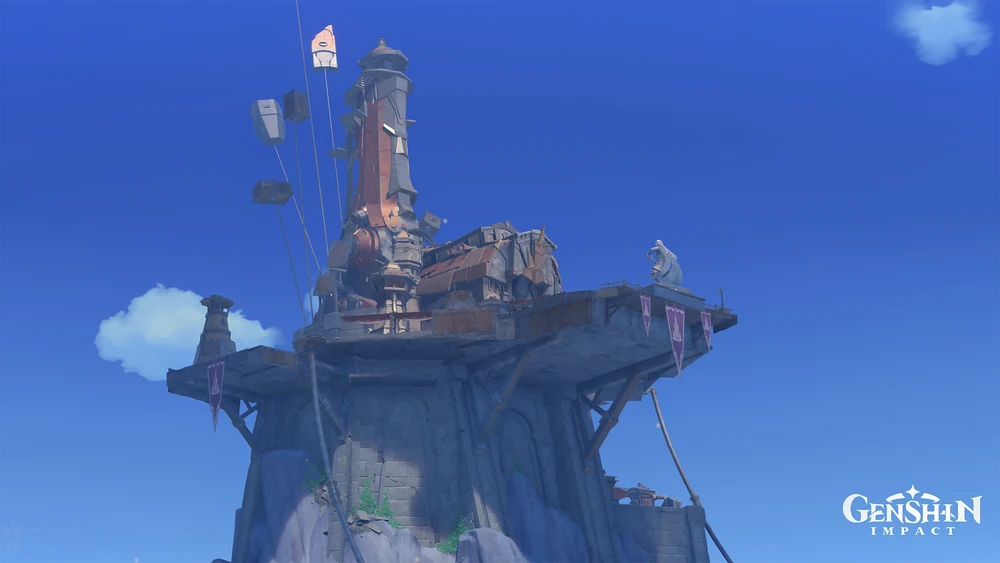
Imagem: GenshinImpactWiki
Piramida é a sede dos Lightkeepers, uma facção que atua em Voidsea Outlook a partir dessa
imponente estrutura em forma de pirâmide.
7. Wavechaser Plain
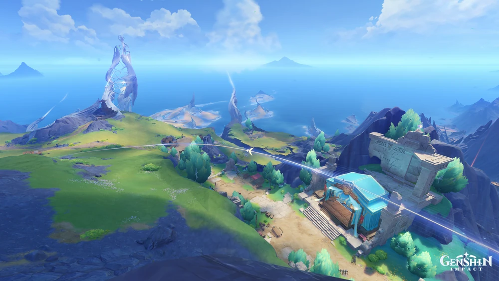
Imagem: GenshinImpactWiki
Wavechaser Plain é uma extensa planície costeira de Nod-Krai, reunindo desde ruínas
antigas até postos avançados ligados à guarda da região, refletindo a diversidade
geográfica das terras fronteiriças.
Subáreas: Amsvartnir, Favonius Keep, Pillar of Embla, Wing of Keres.
Amsvartnir
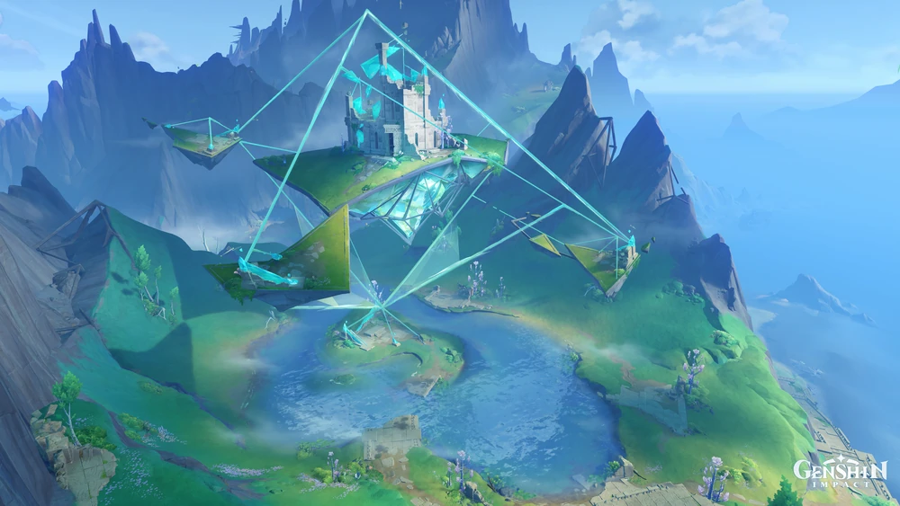
Imagem: GenshinImpactWiki
Amsvartnir é uma área de Wavechaser Plain ligada a antigas lendas nórdicas adaptadas ao
folclore de Nod-Krai, guardando ruínas e mistérios de eras passadas.
Favonius Keep
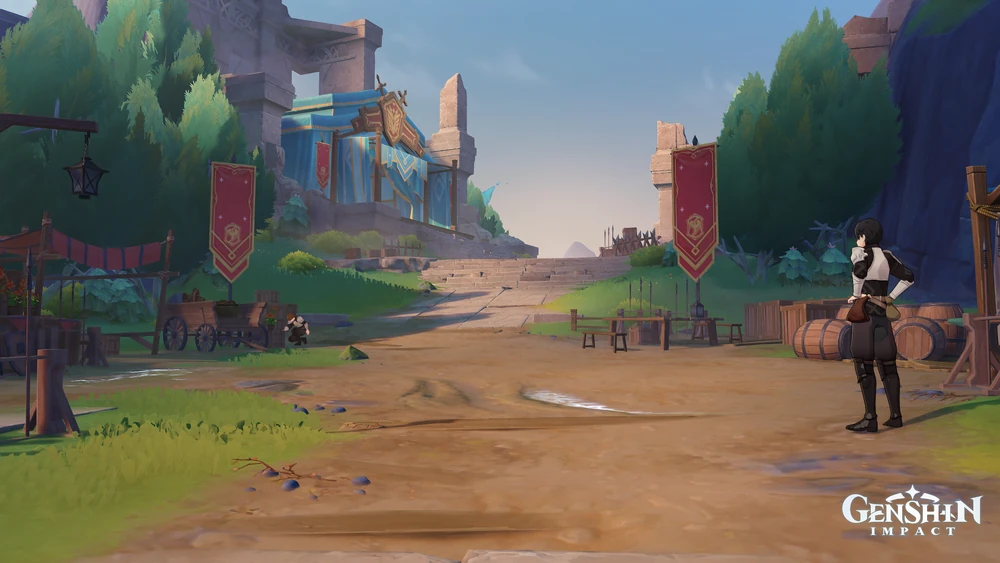
Imagem: GenshinImpactWiki
Favonius Keep é um posto avançado ligado aos Cavaleiros de Favonius, indicando a presença
e influência de Mondstadt até as terras fronteiriças de Nod-Krai.
Pillar of Embla
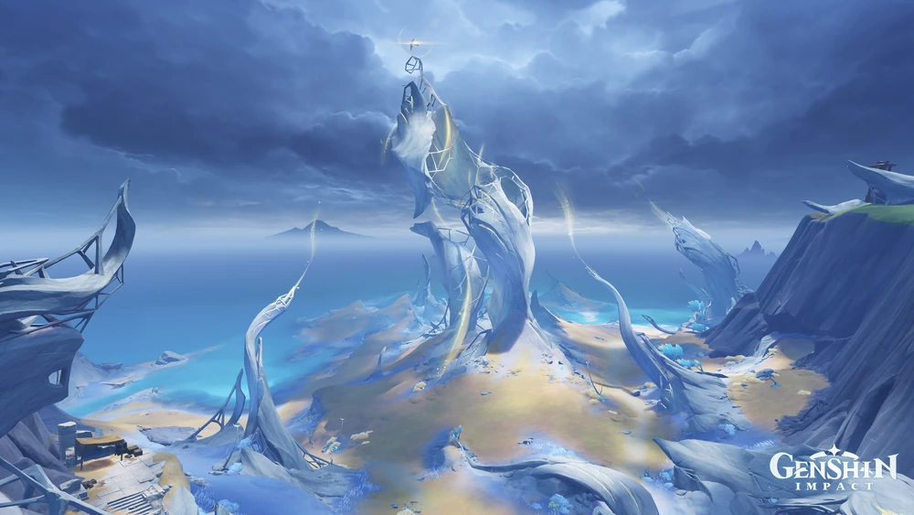
Imagem: GenshinImpactWiki
Pillar of Embla é uma estrutura monumental de Wavechaser Plain, associada a lendas locais
sobre a origem e formação das terras da região.
Wing of Keres
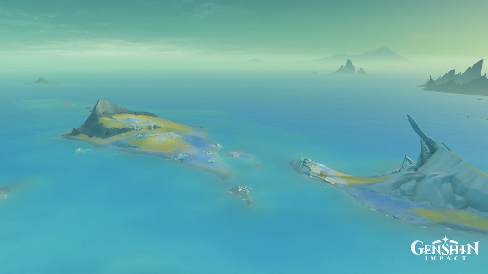
Imagem: GenshinImpactWiki
Wing of Keres é uma área de Wavechaser Plain nomeada em referência às Keres, figuras
místicas ligadas à morte e ao destino em antigas mitologias que inspiram o folclore local.